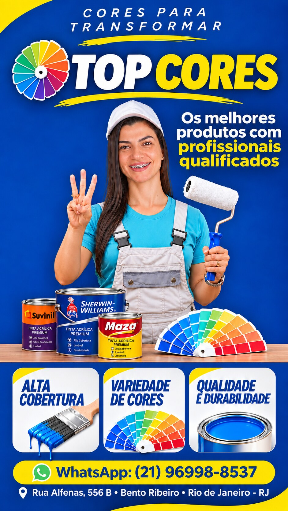
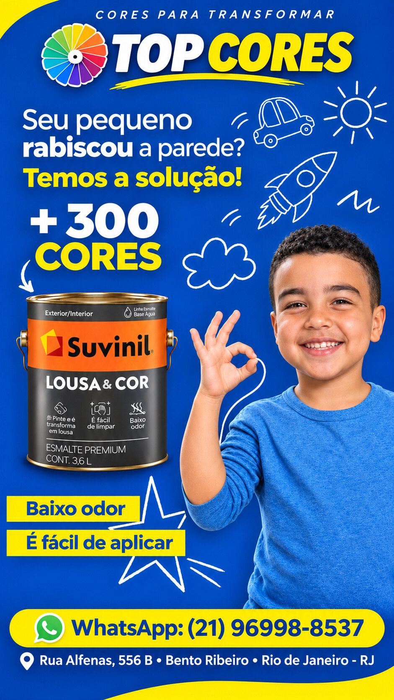
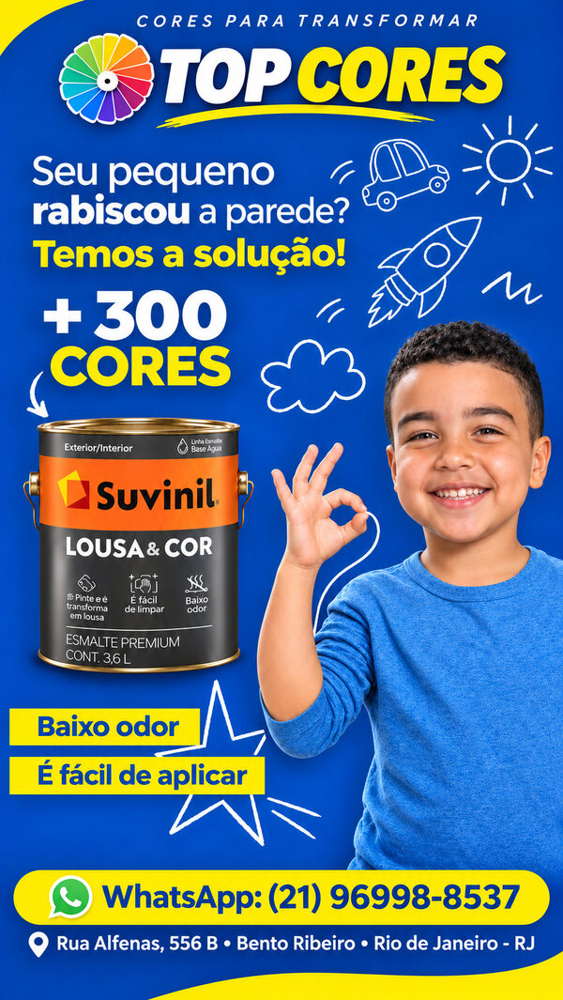
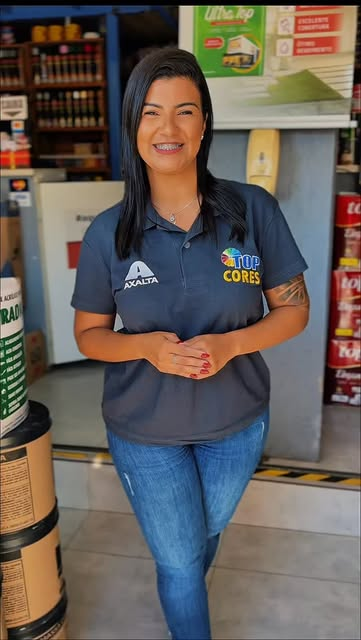

ESCOLHAS PARA O SEU PROJETO
1 / 4PRODUTOS EM DESTAQUE
CORES PARA TRANSFORMAR
A COR É O COMEÇO DE TUDO!
Os melhores produtos com profissionais qualificados para o seu projeto.
✓QUALIDADEMarcas para seu projeto
◉MAIS CORESOpções para transformar
↗ENTREGAConsulte condições
♡ATENDIMENTOEquipe especializada
ENCONTRE O QUE PROCURA
CONSULTAR →CATEGORIAS POPULARES

DESTAQUE TOP CORESMAIS COR PARA
MAIS COR PARA
SEUS PROJETOS!
Descubra produtos para renovar sua casa e transformar ambientes.
CONSULTAR PRODUTOS →
INSPIRE-SE
ENCONTRE SUA COR
Escolha um tom e imagine novas possibilidades para seu ambiente.
Cor escolhida: Amarelo
FALE SOBRE CORES →✦
MARCAS QUE VOCÊ CONHECE
MAZALUKSCOLORSHERWIN-WILLIAMSAXALTA
Consulte os produtos e a disponibilidade na loja.

ESTAMOS AQUI PARA AJUDAR
CONTE COM A TOP CORES
Tintas imobiliárias e automotivas, leitura de cores e atendimento especializado para tirar seu projeto do papel.
FALE COM A GENTE →